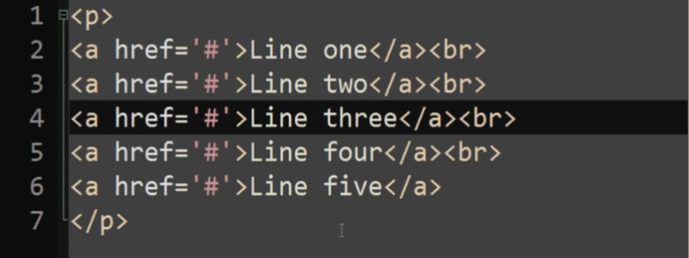

//Проверка файлов и директорий на существование
if(file_exists("file.txt")){
echo "Файл или директория существует"
}
if(is_file("file.txt")){
echo "Файл существует"
}
if(is_dir("images")){
echo "Директория существует"
}
//Размер файла. Возвращает количество байт
echo "Длина файла file.txt: " . filesize("file.txt");
//Время измененияи доступа к файлу, filemtime возвращает временную метку
echo "Файл file.txt был изменён: " . filemtime("file.txt");
echo "И запрошен: " . fileatime("file.txt");
//Что можно с файлом делать?
if(is_readable("file.txt")){
echo "Файл можно читать"
}
if(is_writable("file.txt")){
echo "Файл можно писать"
}
if(is_executable("file.txt")){
echo "Файл можно исполнять"
}
//fopen открывает файл на запись или чтение если он существует, если его нет то он попытается его создать, при наличии прав на запись
//открытие потока на чтение и получение его дескриптора в переменную $f. Тип этого дескриптора будет resource. Указатель помещается в начало файла
$f = fopen("file.txt", "r") or die("Не могу открыть файл")
//закрытие потока
fclose($f);
//открытие потока на чтение и запись. Указатель помещается в начало файла
$f = fopen("file.txt", "r+");
//открытие потока на запись. Указатель помещается в конец файла
$f = fopen("file.txt", "a");
//открытие потока на чтение и запись. Указатель помещается в конец файла
$f = fopen("file.txt", "a+");
//открытие потока на запись. Файл обрезается но нулевой длины. Удобно для перезаписи файла
$f = fopen("file.txt", "w");
//открытие потока на чтение и запись. Файл обрезается но нулевой длины. Удобно для перезаписи файла
$f = fopen("file.txt", "w+");
//при чтении побайтово учитываются и пробелы и пренос строки
$f = fopen("data.txt", "r");
//читаем первые 5 байт
echo fread($f, 5);
//читаем следующие 3 байта
echo fread($f, 3);
//чтобы зачитать весь файл можно либо указать большое число 2м аргументом, либо воспользовать функцией filesize()
//редкая функция fpassthru(). Выводит на экран содержимое файла от курсора и до конца. Результат нельзя принять в переменную.
fpassthru($f);
//fgets($f) возвращает строку. Признаком концом строки есть \n
$f = fopen("data.txt", "r");
$lines = [];
while($line = fgets($f))
$lines[] = $line;
}
fclose($f);
Часто бывает что нужно из интернета стырить какой нибудь текст из файла. Допустим есть такой файл:
Но нам нужен только текст без тегов, для этих случаев есть функция fgetss(). Она вырезает все теги и возвращает построчно только текст:
$f = fopen("file.html", "r");
$lines = [];
while($line = fgetss($f))
$lines[] = $line;
}
fclose($f);
Один момент связан с тем что в массиве первым элементом будет пустое место, если посмотреть в файл, то если вырезать тег p в самом начале, то там останется каретка и перенос строки, вот они тоже учитываются и положились в 1й элемент массива.
В php 8 функция fgetss() удалена.
//feof($f) проверяет по указателю достигнут ли конец файла
//fgetc($f) — Считывает символ из файла
$f = fopen("data.txt", "r");
$bytes = [];
while(!feof($f))
$bytes[] = fgetc($f);
}
fclose($f);
$f = fopen("file.txt", "a");
fwrite($f, "Новый текст", 25);
fclose($f);
//3й аргумент в fwrite() это ограничение в байтах. Если записываемая строка больше 25 байт, то она обрежется
//есть ещё fputs(), это синоним функции fwrite()
Обратим внимание, что стоит режим "а", значит дописывать будет в конец файла.
//читаем последние 10 байт из потока
$f = fopen("file.txt", "r");
//устаналиваем указатель в нужную позицию. 3й аргумент это константа SEEK_END гворит о том что нужно курсор поставить в конец файла, 2й аргумент говорит, что надо отсчитать 10 байт назад
fseek($f, -10, SEEK_END);
//в какой позиции мы находимся?
echo ftell($f);
//читаем данные
echo fread($f, 10);
//устанавливаем указатель в начало потока
rewind($f);
fclose($f);
//читаем файл напрямую в буфер вывода, не можем в переменную поместить, сразу кидает в буфер, а оттуда выводит на экран. Этим эта функция похожа на fpassthru()
readfile("file.txt");
//примерно похоже на
$f = fopen("file.txt", "r");
echo fread($f, filesize("file.txt"));
fclose($f);
//читаем файл построчно в массив
$lines = file("file.txt");
//то же самое
$f = fopen("data.txt", "r");
$lines = [];
while($line = fgets($f))
$lines[] = $line;
}
//получаем весь файл в виде строки и можем присвоить в переменную
$file = file_get_contents("file.txt");
//то же самое
$f = fopen("file.txt", "r");
echo fread($f, filesize("file.txt"));
fclose($f);
//пишем в файл затирая предыдущее содержимое, если нет файла, то создаст новый с этим именем
file_put_contents("file.txt", "Новый текст");
//то же самое
$f = fopen("file.txt", "w");
fwrite($f, "Новый текст");
fclose($f);
//пишем в файл добавляя содержимое в конец файла
file_put_contents("file.txt", "Новый текст", FILE_APPEND);
//то же самое
$f = fopen("file.txt", "a");
fwrite($f, "Новый текст");
fclose($f);
//самы 3 ходовые функции это file(), file_get_contents(), file_put_contents()
//возвращает массив из файлов, находящихся в папке dir
$files = scandir("dir");
//копируем файл
copy("source.txt", "destination.txt")
//переименовавыем файл
rename("old.txt", "new.txt")
//удаляем файл
unlink("file_to_delete.txt")
//создание директории. Создадим папку dir2 в папке dir1, которая находится с нашим скриптом в одной папке
mkdir("./dir1/dir2");
//удаление директории
rmdir("dir_to_delete");
//имя текущей директории
echo getcwd();
//заходим в текущую директорию. По аналогии с fopen() $dir получает тип ресурс(дескриптор)
$dir = opendir(".");
//читаем содержимое директории
while($name = readdir($dir)){
if(is_dir($name)){
echo "$name - директория";
}else{
echo "$name - не директория";
}
}
//выходим из директории
closedir($dir);
//читаем содержимое текущей директории в массив. Вернётся массив отсортированный по букварю, если 2м аргументом поставить 1, то отсортирует в обратном порядке.
$dir_content = scandir(".");
//читаем определённое содержимое в массив. Вернёт все файлы в текущей директории с разширением .txt
$dir_txt_content = glob("*.txt");